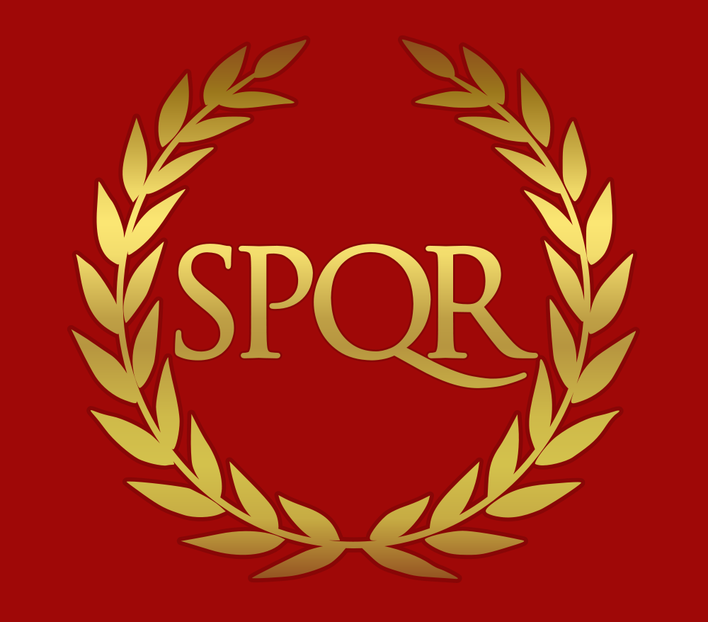

The Legions of the Roman Empire were known for there discipline, rigorous training, engineering prowess, superior equipment, the professionalization certain classes of soldiers and tactical flexibility.
The Roman Legions are most famous for wars like the punic and roman civil war.
The Roman Legions had around 4200-6000 men

| Rank | Legustus | Tribunus Laticlavius | Praefectus Castrorum | Tribuni Angusticlavii | Primus Pilus | Pilus Prior | Centurion | Optio | Tesserarius | Aquilifer | Immunes | Miles |
|---|---|---|---|---|---|---|---|---|---|---|---|---|
| Job | The first commander of the legion | The second in command | Third in command and the highest rank reachable by a professional soldier | Handled administrative tasks and served as staff officers | Most senior centurion in the legion who commanded the first century of the first cohort | Senior centurion within each of the ten cohorts, acting as the cohort commander in battle | Commanded a century | The centurion's second-in-command, responsible for training recruits and maintaining order at the rear of the formation | Responsible for the century's security, including organizing night watches and guarding the daily password. | Carried the unit's symbols. They also managed the unit's financial accounts and burial funds | Specialists such as engineers, architects, surgeons, and carpenters | The standard Roman citizen soldier. Their job involved fighting, building fortifications, and digging ditches. |
| Term of Service | 25 years | 1 to 3 years | 1 year | 3 to 4 years | 1 year | 25 years | 25 years | 25 years | 25 years | 25 years | 25 years | 25 years |